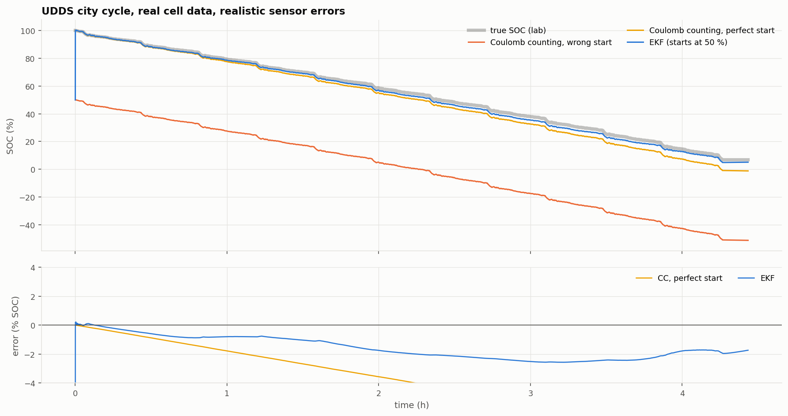

Li-ion BMS, part 1: design overview
A battery management system for a 4-cell pack, from public lab data to C firmware: what each piece does and how they connect.
Goal
Build the brain of a small battery pack: four LG HG2 18650 cells in series (16.8 V). It has to keep the pack safe, estimate how much charge is left, and keep the cells balanced, and I wanted every number to be checked against real measurements rather than made up.
How it works
The project starts from public lab data for this exact cell (McMaster University, CC BY 4.0) and moves toward firmware in five steps:
- Cell model. A slow C/20 test gives the open-circuit voltage curve. A pulse test (HPPC) gives a resistance and two RC pairs at each state of charge. Together they predict the cell's voltage for any current.
- Validation. The model is run on four EPA drive cycles it was never fitted to. Voltage error: 14.5 to 23.7 mV RMS.
- State of charge. An Extended Kalman Filter runs the model alongside the real cell and uses the voltage difference to correct its SOC estimate.
- Firmware. Protection, the EKF and balancing in hardware-independent C99, with the model tables generated straight from the Python code.
- Testing. Unit tests, then software-in-the-loop runs on recorded lab data with faults injected.

What went wrong
Two things in the cell model needed fixing after validation:
- Below about 20 % SOC, the RC fits ran into their parameter limits and gave nonsense. Those fits are dropped and the last good values are held.
- I first used the average of the charge and discharge OCV curves. A drive cycle mostly discharges, so it sits on the discharge side of the hysteresis loop. Switching to the discharge-side curve halved the drive-cycle error.
Testing also found a system-level problem: in city driving, regenerative braking pulses reach 5.3 A, above the cell's 4.5 A charge limit, so the firmware would open the charge FET. That isn't a firmware bug; the vehicle has to cap regen at the BMS limit, and I wrote it down as a requirement.
Note: Mid-SOC, a 1 % change in charge moves the cell voltage only 6–10 mV. That is why a Kalman filter beats simple voltage lookup: it has to weigh a small, noisy voltage signal against current integration.
Next
A closer look at the EKF and how it was tuned, then temperature-dependent parameters. The full project is in the case study.